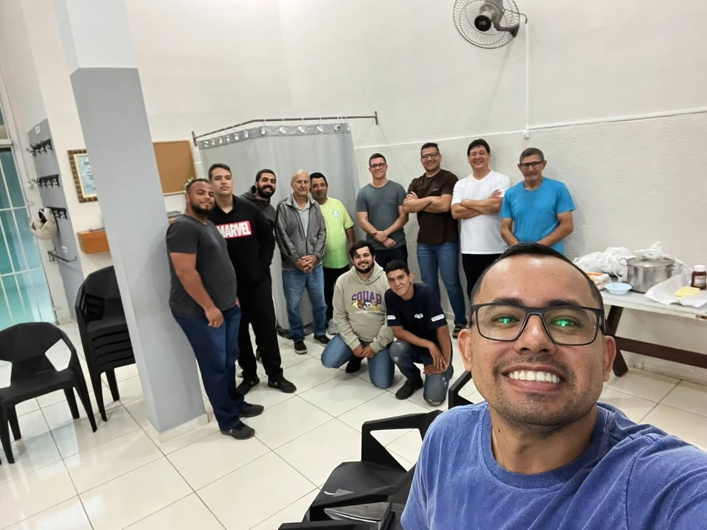
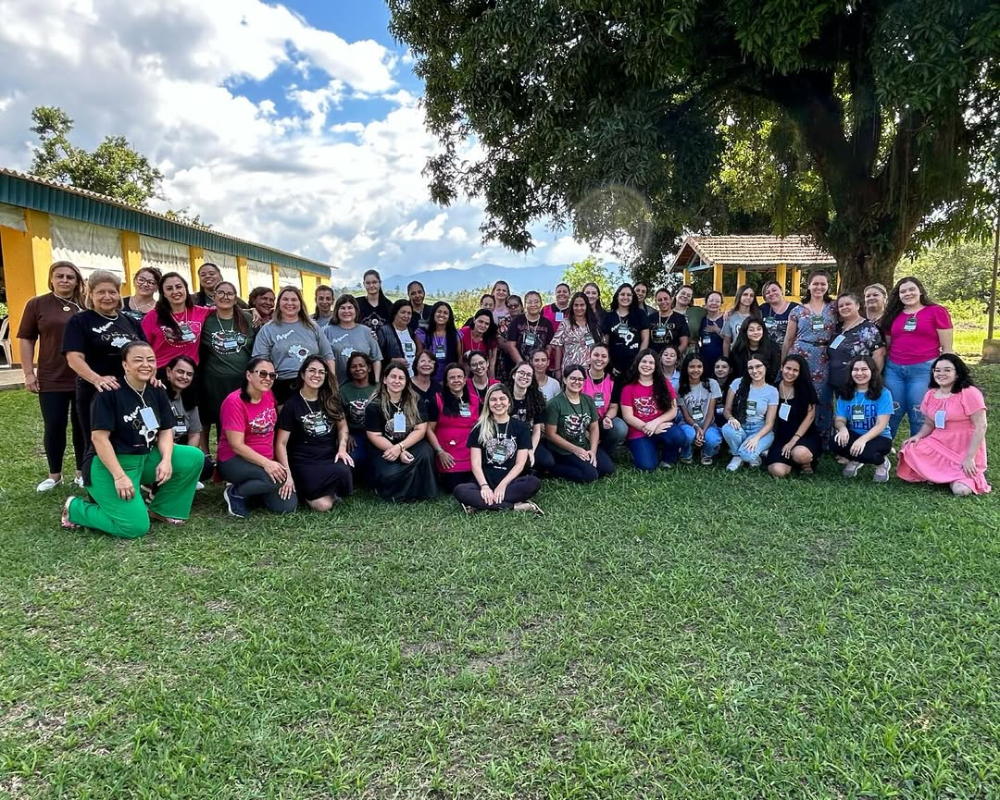
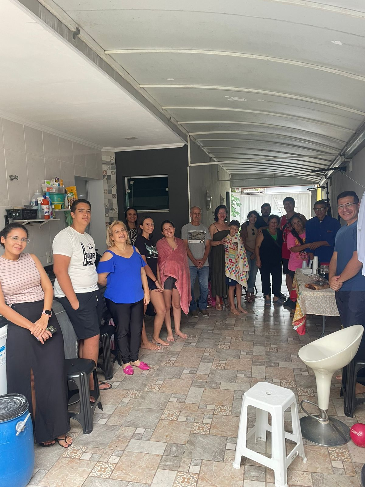
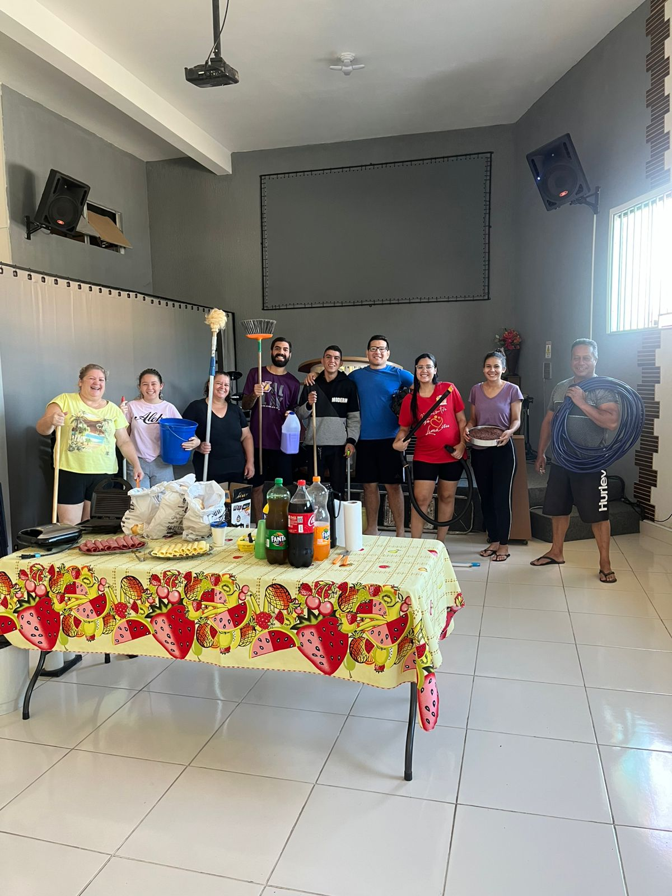

Bem-vindos à Igreja Palavra Fonte de Água Viva (IPFAV), de Taubaté-SP. Trata-se de uma igreja local, filiada à IPFAV matriz, sediada em Três Lagoas-MS. Somos uma igreja evangélica pós-denominacional (isto é, uma comunidade cristã independente, não ligada a convenções eclesiásticas) cuja missão e propósito é glorificar o nome de Deus a serviço do Reino, proclamando a palavra da verdade e levando o poder às nações, cumprindo, dessa forma, o ide de Cristo.
Visão IPFAV
A visão do ministério não consiste em “onde” queremos chegar, todavia, em “como” enxergamos as realidades da obra de Deus. Nosso objetivo é glorificar a Deus, e avançamos, com plantio de igrejas, baseados em duas passagens bíblicas que originaram a visão IPFAV, a saber:
Matheus 22:29- “Errais por não conhecer a palavra e o poder de Deus”.
Temos, assim, dois pilares da visão: a palavra e o poder. Cremos que a palavra é a fonte de verdade e conduta de fé do cristão e que o poder, em forma de dons, manifestações sobrenaturais e transformações de vidas, testifica a vividez e eficácia das Boas-Novas.
Hebreus 11:9 - “Pela fé (Abraão) peregrinou na terra prometida como se estivesse em terra estranha; viveu em tendas, bem como Isaque e Jacó, coerdeiros da mesma promessa”.
Temos, enfim, o terceiro pilar da visão: a transmissão geracional da fé cristã. Quando as gerações entrelaçam-se, permitindo o fruir das promessas divinas, de geração em geração é vista a união do falar, pensar e parecer para o cumprimento dos propósitos de Deus.
Observando os últimos dias em que vivemos, percebemos que sempre na passagem do bastão do Evangelho de uma geração à outra, o inimigo de nossas almas tenta derrubá-lo desclassificando assim todas as gerações envolvidas na corrida de fé.
Por isso, é necessária essa transmissão da fé aos moldes de Abraão, Isaque e Jacó, alinhados à mesma visão.




Plantio IPFAV
Em meados de setembro de 2016, no quinto ano de existência da visão IPFAV, o Conselho geral do ministério, decidiu, orientado pela palavra e sinais de Deus, plantar a primeira igreja no estado de São Paulo. Anterior ao plantio propriamente dito, por vezes, um grupo de irmãos vinha á cidade preparar lugar para abertura do ministério; e em sua palavra, Deus confirmou o plantio nas seguintes passagens:
Salmos 84:5-7- "Bem-aventurados os que em ti encontram força e os que são peregrinos de coração! Ao passarem pelo vale de Baca, fazem dele um lugar de fontes; as chuvas de outono também o enchem de cisternas. Prosseguem o caminho de força em força, até que cada um se apresente a Deus em Sião."
Ezequiel 37:9-10- "A seguir, ele me disse: ― Profetize ao espírito; profetize, filho do homem, e diga‑lhe que assim diz o Soberano Senhor : “Venha desde os quatro ventos, ó espírito, e sopre dentro desses mortos para que vivam”. Profetizei conforme a ordem recebida, e o espírito entrou neles; eles receberam vida e se puseram em pé. Era um exército enorme!"
Ambos capítulos inteiros falaram conosco à época, sobretudo, os versículos enfatizados. Entendemos que era tempo de fazer fontes no vale onde Taubaté está inserido e profetizar restauração de vidas sobre o lugar. Identificamo-nos com as passagens bíblicas por sermos a Igreja Palavra Fonte de Água Viva localizada no Vale do Paraíba.
Sendo assim, cremos que as portas estão abertas até o dia de hoje (no mesmo templo) por permissão e direção do Espírito Santo; bem como podemos somar forças aos Santos e às comunidades cristãs da região para proclamar o Evangelho.
Rememore conosco, por meio de um vídeo caseiro da época, as primeiras incursões da nobre missão de plantar a IPFAV Taubaté.
Liderança IPFAV Taubaté
Tiago Amâncio está atualmente como Pastor local da IPFAV Taubaté. É o segundo pastor a assumir o ministério na cidade. Em 28 de fevereiro de 2022 foi consagrado pastor, aos 25 anos de idade, pelo Conselho Geral da IPFAV e desde então tem estado na liderança da igreja. Anteriormente, havia sido presbítero no pastoreio antecessor.
O pastor Tiago participou dos plantios da IPFAV Taubaté e de Campo Grande, ganhando experiência na área eclesiástica. Pertence à IPFAV desde o culto de inauguração em 2011,como também pertencia à célula inicial formadora do ministério.
Este jovem pastor, apesar de não vir de berço evangélico, se conhece por gente na igreja, por ser filho de pais cristãos. Mas foi na última semana de abril de 2014, aos 17 anos de idade, que realmente se voltou a Cristo. Em um propósito de 07 dias de oração, junto a alguns irmãos, Deus o chamou para a conversão genuína e obra, não afunilando naquele momento seu ministério, mas deixando claro através da profecia que Deus faria uma obra rápida em sua vida.
Sobre essa metanoia, segue as palavras do pastor: “antes da minha conversão não perdia tempo, apenas deixava de ganhar. Agora, porém, os significados de perda e ganho mudaram para mim, perco a vida para ganhá-la. Quão bom é perder para Cristo!”
Desde então, tem se preparado para responder a contento a missão pastoral. O pastor Tiago é mais um dos muitos bivocacionados líderes da IPFAV (isto é, concilia a vocação ministerial junto à profissão secular). É bacharel em teologia, pós-graduado em aconselhamento pastoral e mestre em práxis pastoral urbana. Recentemente, em 2024, publicou seu primeiro livro
“Cuidado & proteção: aconselhamento pastoral ante a violência contra mulher”. É uma obra com ênfase em munir conselheiros em defesa das mulheres que sofrem violências no seio da igreja.